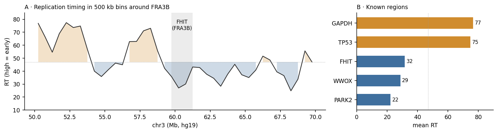
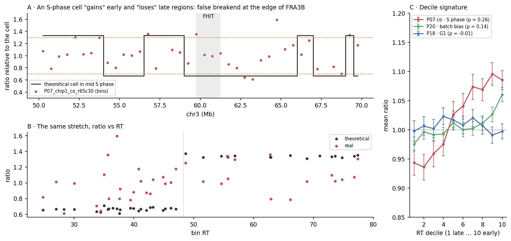
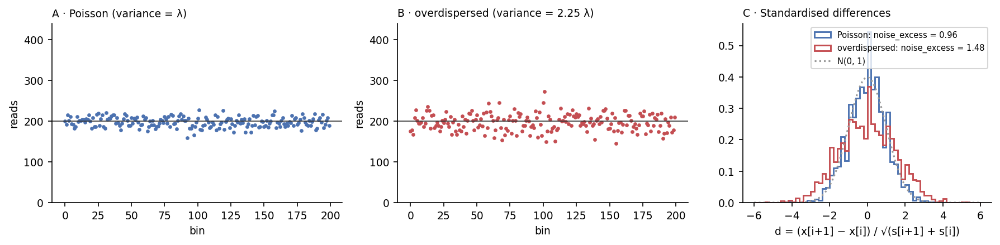
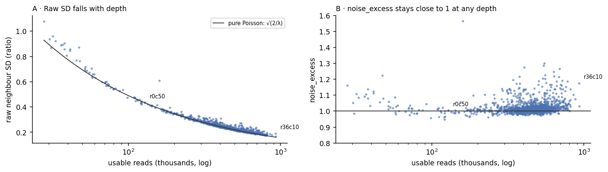
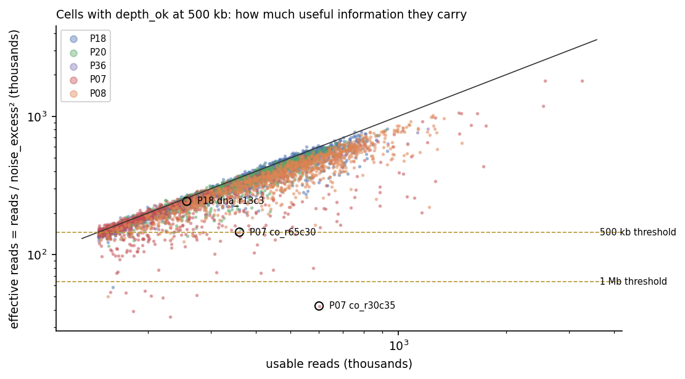

Copy-number breakends in CFS: full methodology and next steps
Project question: do copy-number (CN) breakends of normal breast epithelial cells fall in common fragile sites (CFS) more often than expected? This report has two parts. Part I walks through the methodology applied since the start, from public data to breakends, with the reasoning and the alternatives discarded at each step. Part II summarises the pilot results and details the four pending steps.
- Done. Alignment and relative/absolute CN of the 5 pilot donors at 200 kb, 500 kb and 1 Mb; QC metrics and uncalibrated breakends; harmonised CFS catalogue (4 sources, hg19).
- Next. Calibrate on P18 the thresholds for noise, S phase, ratio and minimum segment. Everything downstream depends on this.
- Finding that shapes the design. The ~1,000 breakends per bin reduce to ~230–380 independent events when clones are collapsed; a single P08 clone (6q gain) contributes 42% of the breakends at 500 kb.
- Power. With ~300 events, the large catalogues (MiDAS U2OS/HeLa, HumCFS) detect folds of 1.5; those from normal or epithelial cell types (HS68, HBE, MCF10A) detect only large effects or none.
- Main risk. Confounding with late replication timing and with large genes, and clonal selection of positions. The design (tests A + B + C) addresses this.
Part I
Methodology applied so far
Each step is judged by the same question: can it create false breakends or lose real ones, and do so in a way correlated with CFS (late replication, repetitive regions, large genes)? An artefact distributed at random only costs power; one correlated with CFS creates a false enrichment.
A · Data, inventory and pilot selection
Source. Lin et al. 2024, Nature 636:663 ("Normal breast tissues harbour rare populations of aneuploid epithelial cells"): scDNA-seq by direct tagmentation (ACT) in ICELL8 nanowells of normal breast tissue, BioProject PRJNA1003661.
| Data type | Accession | Runs | Donors | Use |
|---|---|---|---|---|
| scDNA-seq, DNA-only wells | PRJNA1003661 | 54,073 | 29 | Yes |
| scDNA-seq, DNA part of the DNA-ATAC co-assay | PRJNA1003661 | 44,707 | 27 | Yes (DNA library only) |
| Co-assay scATAC-seq | GSE272504 / PRJNA1136981 | 19 | 19 | No; the barcodes allow recovering lineage |
| Visium | PRJNA1003661 | 6 | 6 | Deferred |
scripts/00_metadata/build_data_inventory.py → data/metadata/data_inventory_*.tsv). Limitations. There is no published inventory: the classification comes from the authors' naming, which is undocumented. Nine donors labelled co-assay have no ATAC, and P21 has ATAC but its DNA wells are labelled DNA-only. There is no scRNA-seq in the study. Source: data/metadata/data_inventory_datasets.tsv, data/metadata/data_inventory_donors.tsv (script scripts/00_metadata/build_data_inventory.py).- A cell is a well, not a run. About 7,354 cells were sequenced twice (same library, another instrument). The runs of a cell are grouped by donor, chip, well and assay, and concatenated, so that no cell is counted twice.
- Full dataset. 98,780 WGS runs from 91,374 wells and 49 donors, on NextSeq 2000, NovaSeq 6000 and HiSeq 4000, mixing single-end (46–50 bp) and paired-end (50–60 bp) depending on batch. 88,866 cells have imaging quality
Good, a single cell and a non-control well. - No per-cell annotation. The authors' CopyKit object is not public, so there is no per-cell aneuploid/diploid status: CN is called from scratch. Per-donor fractions (Suppl. Table 2) and per-donor arm events from the authors' repository serve as validation.
Pilot. Five donors chosen to span the range of aneuploidy and depth: P08, P07 and P36 are the most aneuploid in the paper (20.9%, 14.3%, 8.2%), P20 is deep (4.8%, with Visium) and P18 is the deepest and near diploid (1.0%), chosen as the noise reference. In total, 9,181 cells and 12,542 runs.
| Pilot alternative | Pros | Cons |
|---|---|---|
| Chosen: extreme donors plus a deep control | Tests the method where there is signal and where there should be none | Does not represent the typical donor distribution |
| Random sample of cells from all donors | Representative of the dataset | Few events and no clean control to calibrate noise |
B · Infrastructure: AWS HealthOmics
- Account and region. Work account
, region eu-west-1 (an organisation policy blocks HealthOmics in us-east-1). Project data in s3://./cnv_cfs/ - Staging. The
.srafiles are in the public bucketsra-pub-run-odp(us-east-1), readable only unsigned with this account. A temporary EC2 instance copied them to eu-west-1: 12,542 pilot runs, 152.5 GB, with a sha256 manifest per file. The manual procedure is indocs/AWS_RUNBOOK.md. - Containers. Two images in ECR (
cnv-cfs/alignandcnv-cfs/copynumber) with the same tool versions as the group pipelines, which are git submodules pinned to a commit. CRAN packages come from a fixed-date snapshot. - Workflows. Nextflow on HealthOmics: bwa index, alignment and copy number. Each workflow was tested on 20 cells (4 per donor) before the pilot.
| Alternative | Pros | Cons |
|---|---|---|
| Chosen: HealthOmics with own containers | Scales to ~100,000 runs; pinned versions; per-run traceability | Slow start per task; harder debugging; the AWS login expires during long runs |
| CNIO HPC | No per-use cost; known environment | ~1.2 TB of SRA to move; shared queues |
| Images from other group projects | Already exist | Rejected by the user: this project does not use |
C · Reads and alignment (level-1 QC)
Level 1 decides whether each cell's library is valid and how many usable reads it has: primary, mapped, MAPQ ≥ 37 and non-duplicate, which are exactly the reads QDNAseq counts.
| Step | What is done | Why | Con |
|---|---|---|---|
| R1 only | fasterq-dump --split-3; from paired-end runs _1.fastq is used | QDNAseq counts reads, not fragments: with both mates, each fragment would count twice in the same bin, the threshold of 15 reads per bin and copy would admit cells with ~7.5 fragments, and the variance would no longer be Poisson. It also makes single-end and paired-end runs comparable. | Half of the bases of paired-end runs are discarded |
| Concatenate runs | The runs of a cell are joined before trimming and aligning | One cell = one observation; PCR duplicates across runs are detected together | Depends on grouping runs correctly by well |
| Trimming | No 5' hard trim; cutadapt -a CTGTCTCTTATACACATCT -m 20 (Tn5 mosaic end) | ACT libraries have no pre-amplification adapter: no initial 14-mer exceeds 0.2% of reads (they are genomic repeats). The mosaic end appears in 0.01–2.8% depending on the run. Removing 14 bp would leave 32 bp reads and lower mappability precisely in repetitive regions. | Departs from the group's default configuration |
| Alignment | bwa mem 0.7.17 single-end against hg19 (chr1–22, X, Y, M; no alternates), samtools markdup -s | The whole downstream chain (QDNAseq bins, RT, enrichment script) is in hg19 | hg19 instead of GRCh38 |
| MAPQ ≥ 37 | QDNAseq ignores reads with lower MAPQ when counting | With 46–58 bp, only then does a read have a unique position | Loses mostly repetitive regions, where many CFS lie. It reduces the ability to see breakends there but does not create false ones; the null must use only usable bins. |
| Duplicates | Marked and not counted; they do not exclude cells | A PCR duplicate is not a new observation and mimics focal gains | No UMIs; in paired-end, deduplicating on R1 adds ~0.02% collisions |
Worked example · why R1 only
Cell P18_chip1_dna_r55c17 (NovaSeq, paired-end 50 bp): 603,136 usable fragments, at 200 kb (12,017 usable bins).
And at low depth: a cell with 200,000 fragments has 200,000 / 12,017 / 2 = 8.3 fragments per bin and copy, and does not pass. Counting both mates it would show 16.6 and pass with half the information the threshold requires.
Conclusion. With R1, a cell with no extra noise gives noise_excess ≈ 1 and the threshold of 15 means 15 independent fragments. With both mates, both metrics shift differently in single-end and paired-end runs, which creates a batch effect.
Source: data/pilot/align_qc_test20.tsv, docs/qc_levels_1_2/read_fate.tsv (script scripts/02_align/summarize_align_qc.py; scripts/docs/qc_doc_data.R); usable bins from data/metadata/usable_bins.tsv.
Worked example · concatenating runs
P08_chip1_co_r0c11 has two runs of the same library: SRR25851362 (NextSeq single-end 46 bp, 65,159 reads) and SRR30469041 (NextSeq paired-end 58 bp, 217,096 fragments).
One run per cell would duplicate the cell in the analysis and split its depth.
Source: data/metadata/cells.tsv, data/pilot/align_qc_pilot.tsv (script scripts/00_metadata/build_cell_metadata.py; scripts/02_align/summarize_align_qc.py).
Worked example · trimming and duplicates
- 14 bp hard trim: a 46 bp NextSeq read would become 32 bp (−30% of sequence). With 32 bp there are more repeated positions in the genome and fewer reads reach MAPQ ≥ 37, especially in repeats, where many CFS lie. The adapter that would justify the trim does not exist: the most common initial 14-mer is ATTCCATTCCATTC (satellite), with 90 of 65,159 reads (0.14%).
- Tn5 mosaic end: 7 / 65,159 reads (0.01%) in SRR25851362 vs 15,948 / 574,816 (2.77%) in SRR30471038. That variation between runs is a batch effect, which is why it is trimmed.
- Collisions when deduplicating on R1 only: two different fragments starting at the same position and strand are marked as duplicates. With N reads over ~2 × 2.8 × 10⁹ stranded positions, the collision fraction is ≈ N / 5.6 × 10⁹. With N = 1,000,000, that gives 0.018%, vs the 10–46% duplicates observed: they are real duplicates.
Source: per-run adapter and 14-mer counts come from a manual check of four runs (QC levels 1–2 document, section 1.2); they are not stored in a table. Duplicate rates: data/pilot/align_qc_pilot.tsv.
Worked example · from sequenced to usable reads
The fitting_absCN threshold assumes that 91% of sequenced reads are usable (calibrated on bulk). Here, the usable fraction ranges from 39 to 69%. To reach the 396k usable reads a diploid cell needs at 200 kb:
That is why ENA-based counts overestimated the cells passing. The final filter uses the real usable reads counted by QDNAseq, not ENA.
Source: docs/qc_levels_1_2/read_fate.tsv, data/pilot/align_qc_test20.tsv (script scripts/docs/qc_doc_data.R).
Pilot checks. Input reads match ENA exactly in all 9,181 cells; one cell maps below 90%. Usable reads are 39–69% of those sequenced.
| Donor · assay | Duplicates (ours) | Paper |
|---|---|---|
| P18 | 11.9% | 12.7% |
| P07 · DNA-only | 14.9% | 15.2% |
| P07 · co-assay | 40% | — |
| P08 | 24% | — |
| P36 | 38% | 38% |
| P20 · DNA-only / co-assay | 46% / 34% | 16% |
scripts/02_align/summarize_align_qc.py → data/pilot/align_qc_pilot.tsv). Paper: Suppl. Table 2, where available for comparison. Limitation. We do not know how the paper computes its rate (per pair, per run or per cell), which may explain the P20 discrepancy, still unresolved. Source: data/pilot/align_qc_pilot.tsv (script scripts/02_align/summarize_align_qc.py); paper column: Lin et al. 2024 Supplementary Table 2, parsed to data/metadata/paper_scdna_qc.tsv (scripts/00_metadata/parse_suppl_tables.py); P20 per-run check: data/pilot/dup_check/dup_check_P20.tsv.Depth threshold. fitting_absCN requires 15 reads per bin and copy (nrpbpcc) to consider a fit reliable. With λ = 15 per copy, the step between CN 2 and CN 3 (15 reads) is ~2.7 times the standard deviation at CN 2. For a diploid cell, the threshold is 15 × 2 × usable bins / 0.91: 396k reads at 200 kb (12,017 bins), 145k at 500 kb (4,407) and 64k at 1 Mb (1,942). This diploid threshold is the one used in depth_ok, independent of the fitted ploidy (see E).
Worked example · the threshold of 15 reads per bin and copy
Why 15. With λ reads per copy and Poisson counts, a bin at CN 2 has mean 2λ and SD √(2λ); at CN 3, mean 3λ.
Usable reads needed for a diploid cell:
Consequence for the pilot. The P36 median is 81k usable reads, below the 396k of 200 kb (3% of its cells pass) and the 145k of 500 kb (22%), but above the 64k of 1 Mb (62%). The bin decides which donors get in.
Source: data/metadata/usable_bins.tsv (script scripts/00_metadata/count_usable_bins.R); P36 depth: results/pilot_cn/qc/cn_qc_<bin>kb.tsv.
D · Relative CN (QDNAseq)
sWGS_relativeCN (QDNAseq 1.26 + QDNAseqmod) unmodified, with the upstream parameters --undo.SD 1 --cnaware NO --mappability YES --reptiming NO, in all three bins.
- Bins. 200 kb with the
sWGS_relativeCNannotation; 500 kb and 1 Mb withQDNAseq.hg19. Each bin carries GC, mappability (50 bp reads), blacklist and residual in controls. - Counting of usable reads per bin.
- Filters (
applyFilters(residual = TRUE, blacklist = TRUE)): blacklisted bins and bins with anomalous residuals in control genomes are removed. - Correction: two-dimensional loess against GC and mappability, per cell.
- Segmentation: CBS (DNAcopy) on the square root of the count, which stabilises the Poisson variance; contiguous segments that differ by less than 1 SD are merged.
| Parameter | Why | Risk |
|---|---|---|
--mappability YES | Corrects the loss of reads in low-mappability bins, frequent near CFS | Over-correcting bins of very low mappability |
--cnaware NO | Designed for tumours; here most cells are diploid | In highly aneuploid cells, the global loess may absorb part of a real change |
--reptiming NO | Upstream only applies it at 30 and 50 kb | The S-phase signature remains uncorrected and is handled as QC (F) |
--undo.SD 1 | Upstream value | At low depth spurious segments appear; noise and minimum segment guard against this |
E · Absolute CN: from analysis basis to flag
pureSamples_absCN.R scans a grid of ploidy (1.4–8, steps of 0.1) and purity (0.90–1.00) and picks the combination whose segments lie closest to integers (lowest "clonality": mean of (CN − round(CN))²). With --filters powered it keeps the best among the ploidies that reach 15 nrpbpcc.
Flaw found. The depth threshold falls with ploidy (15 × ploidy), so a cell short of reads only passes the filter at low ploidies, and the filter imposes a false ploidy on it. Example: P36_chip1_co_r51c33 at 200 kb receives ploidy 1.6 (clonality 0.18) when the best fit is 2.0 (0.0049); it has 319k reads vs the 396k needed.
Worked example · how the powered filter forces a false ploidy
P36_chip1_co_r51c33 at 200 kb: 318,618 usable reads, 12,017 bins. With purity 1, the reads required by powered grow with ploidy P:
With --filters powered, the script can only choose among the ploidies that pass: it keeps 1.6, with a clonality 37 times worse than that of 2.0. The 1.4 and 1.5 rows do not pass because their best purity is 0.90 and, with purity < 1, the upstream formula requires more reads.
What happens to breakends. Absolute CN is relative CN multiplied by the ploidy. With 1.6 instead of 2.0:
With the ratio threshold, the gain (1.50 > 1.3) is detected whatever the fitted ploidy. The cell is judged with the diploid threshold: 318,618 < 396,165, so it does not pass at 200 kb, but it does at 500 kb (145,286) and at 1 Mb.
Source: results/pilot_cn/absCN/P36_200kb/P36_chip1_co_r51c33_resfitting.txt, results/pilot_cn/qc/cn_qc_200kb.tsv (script fitting_absCN pureSamples_absCN.R; scripts/03_cn_qc/cn_qc_metrics.R).
Worked example · ratio threshold vs rounding to integers
In a well-fitted diploid cell, ratio and integer CN are equivalent except in where they place the cut:
Rounding places the cut at 2.5 / 1.5, exactly halfway between states, where the noise of a single cell's segment decides the result. The ratio threshold places it at 2.6 / 1.4, with a margin that is calibrated on P18 and does not depend on having fitted the ploidy correctly. Neither avoids the "cliff": what changes is where it is and whether it can be calibrated.
Breakends come from the relative CN. The unfiltered absolute fit is used only as a flag: ploidy_flag (best ploidy ≥ 2.6) and fit_disagree (filtered and unfiltered fits disagree). Depth is judged with the diploid threshold. Manual curation becomes an audit of ~100 cells.
| Option | Pros | Cons |
|---|---|---|
| Chosen (A): breakends from relative CN with a ratio threshold | Conversion to absolute only rescales segments and does not move change points; in a near-diploid population, a ratio step is equivalent to a one-copy step; avoids rounding errors (a segment at CN 2.55 creates or removes breakpoints depending on rounding) | Loses ploidy information in the few polyploid cells, which are flagged and reviewed |
| Integer CN with the filtered fit | Same as the group workflow | False ploidies in cells short of depth (the flaw above) |
| Integer CN with manual curation of all cells | Best quality per cell | Infeasible with ~90,000 cells |
Curation. For the audit, the group's curation app was integrated (Shiny for Python; code only). It starts from the unfiltered optimum, warns when the filtered one differs, shows a per-cell QC panel and works blind (random codes; the key is outside the folder the app opens). The grid is recomputed with the exact upstream formulas: 6e-15 difference in clonality and 0 powered mismatches over 1,340 cell × ploidy pairs.
F · Profile QC (level 2)
scripts/03_cn_qc/cn_qc_metrics.R computes, per cell and bin, the metrics that decide whether a profile is reliable as a source of breakends. The cuts are pending calibration (Part II, step 1).
| Metric | Definition | What it detects | Decided |
|---|---|---|---|
depth_ok | Usable reads ≥ 15 × 2 × bins / 0.91 | Cells without the depth to distinguish one copy | Diploid threshold, independent of the fitted ploidy |
noise_excess | Deviation between neighbouring bins of the relative CN, divided by that expected under Poisson for the cell's depth | Irregular amplification, GC waves: noise beyond sampling noise | k calibrated on P18 diploid cells, plus an absolute cap |
rt_rho | Spearman between each bin's relative CN and replication timing | S-phase cells (more copies in early regions) | Exclude; repeat in sensitivity; also an RT-stratified null |
ploidy_flag, fit_disagree | From the unfiltered absolute fit | Polyploidy; unstable fits | Flags for review, not automatic exclusion |
breakpoints, frac_nondiploid | Segment changes and fraction of the genome away from CN 2 | Fragmented profiles | Descriptive |
F.1 · Replication timing and rt_rho
What it is. During S phase, the genome is not copied all at once. Each region has a typical replication time, stable within a cell type. GC-rich, open regions with active genes replicate early; GC-poor, heterochromatic regions with very large genes replicate late. It is measured with Repli-seq (BrdU in early and late S-phase fractions) or by comparing the copy number of S-phase cells with that of G1 cells.
The file we use. bins_with_replicationTime_50kb.tsv comes from the sWGS_relativeCN pipeline: 49,697 windows of 50 kb, each with its GC, mappability and a replicationTime column.
- It ranges from 11.6 to 82.2 (median 48.3). High values are early: it correlates with GC (Spearman 0.69), and known regions fall where expected (figure B).
- Undocumented provenance. The pipeline README only describes the annotations made with 1000 Genomes. Its scale suggests Repli-seq from an ENCODE line; this is not verified, and it is almost certainly not breast epithelium.
- Each of our bins (200 kb, 500 kb or 1 Mb) receives the mean of the 50 kb windows it contains.

external/sWGS_relativeCN/bin.annotations/bins_with_replicationTime_50kb.tsv (script scripts/docs/concept_figures.py).Why it matters. An S-phase cell has more copies of what is already replicated. Mid S phase, if the early part is copied (4 copies) and the late part is not (2 copies):
Worked example · diploid cell in mid S phase
On chr3, that cell would have a "gain" at 57–58.5 Mb (early) and a "loss" at 59–61 Mb (FHIT, late): a false breakend right at the edge of FRA3B. Since CFS are late and usually sit next to early regions, S phase manufactures breakends at CFS edges. It is the most dangerous confounder for our question.

rt_rho = 0.26). B: the same stretch as ratio vs RT. C: mean ratio per RT decile across the genome in three cells: P07 co-assay (steep slope, S-phase signature), P20 (weak slope, batch bias), P18 (flat, G1). Reading. The real cell has a softer signature than the theoretical one (~0.94 → 1.10 across deciles): it would be at the start or end of S phase. It does not cross 1.3 / 0.7 wholesale, but it adds steps that the segmenter can turn into breakends. Limitation. The theoretical model is binary; in reality replication progresses gradually. Source: results/pilot_cn/notebook/profiles_500kb_bins.tsv.gz, external/sWGS_relativeCN/bin.annotations/bins_with_replicationTime_50kb.tsv (script scripts/04_curation/export_relcn.R; scripts/docs/concept_figures.py).rt_rho is the Spearman correlation, across all usable autosomal bins, between the bin's relative CN (corrected count / cell median, unsegmented) and its RT. In G1 it is ≈ 0: the P18 p99 is 0.02–0.07 depending on the bin. In S phase it is positive. Because RT and GC are so correlated, residual GC bias also gives ρ > 0 without S phase: this is what happens to all of P20 (median 0.03–0.04). The decile shape (figure C) distinguishes the two cases: a steep slope in S phase, a weak uniform one in batch bias.
F.2 · noise_excess: origin and computation
Origin. It is a metric of this project (scripts/03_cn_qc/cn_qc_metrics.R); it does not come from the paper or the group pipeline. It combines two common ideas in scDNA-seq:
- Comparing neighbouring bins, like MAPD (the median of absolute differences between adjacent bins, used in Ginkgo and 10x CNV). Subtracting neighbours removes the CN level: a whole-arm gain does not count as noise.
- Measuring overdispersion relative to Poisson: how much more the count varies than read sampling explains.
What it adds is normalisation by each bin's depth, so that it means the same in a cell with 100,000 reads as in one with 1 million.
Definition and why it equals 1 with pure noise
With x = corrected count of the bin and s = mean of the segment it belongs to, for each pair of neighbours on the same chromosome:
If each bin is Poisson with mean s, Var(x[i+1] − x[i]) = s[i+1] + s[i], so d has variance 1 at any depth. With overdispersion (Var = φ·s), noise_excess ≈ √φ. MAD is used rather than SD because the few pairs crossing a real breakend or an outlier bin give a huge d, which MAD ignores.

scripts/docs/concept_figures.py, seed 1).
results/pilot_cn/qc/cn_qc_200kb.tsv (script scripts/03_cn_qc/cn_qc_metrics.R; scripts/docs/concept_figures.py).How to read it: effective reads. Noise k times Poisson is equivalent to a variance k² times larger, as if the cell had k² times fewer reads: effective reads ≈ usable reads / noise_excess².
| Cell (500 kb) | Reads | noise_excess | Effective | Against the thresholds |
|---|---|---|---|---|
| P18_chip1_dna_r13c3 | 256k | 1.03 | 242k | Passes 500 kb (145k) with margin |
| P07_chip1_co_r65c30 | 360k | 1.57 | 145k | Right at the 500 kb threshold |
| P07_chip1_co_r30c35 | 600k | 3.76 | 43k | Does not even reach the 1 Mb threshold (64k) |

depth_ok at 500 kb; diagonal = no extra noise; lines = diploid thresholds of 500 kb and 1 Mb applied to effective reads. Reading. depth_ok measures the quantity of reads; noise_excess, which part of that quantity is useful information. Cells falling below the lines pass depth but have the resolution of a much shallower cell. Almost all are from P07 and P08. Limitation. The equivalence assumes the extra noise is independent between bins; it does not capture slow waves. Source: results/pilot_cn/qc/cn_qc_500kb.tsv (script scripts/03_cn_qc/cn_qc_metrics.R; scripts/docs/concept_figures.py); the effective-reads table above uses the same file.What it does not measure. A slow wave spanning many bins barely changes between neighbours, so noise_excess does not see it. That is what rt_rho and the number of segments are for. The two metrics are complementary: noise_excess measures fast variation (amplification, library), and rt_rho the slow one, organised by replication domains. The latter follows the same geography as CFS.
Why noise as excess over Poisson. The raw deviation between bins falls with depth, so a fixed cut would mix quality with depth, and depth depends on batch. Dividing by the Poisson expectation leaves a metric that equals 1 in an ideal cell, whatever its depth. In P18, the median is 1.01–1.05 and the p99 1.2–1.4.
Worked example · raw noise vs excess over Poisson
Definition. With x = corrected count per bin and s = mean of the segment the bin belongs to, the robust SD (MAD) is taken of:
If counts are Poisson, Var(x[i+1] − x[i]) = s[i+1] + s[i], so the ratio has SD 1. With overdispersion (Var = φ·λ), it equals √φ.
Two real P18 cells at 200 kb. Raw SD is in relative CN units (median = 1):
With the raw SD, the shallow cell looks 2.3 times noisier, although its noise is pure sampling. With noise_excess, the deep one is the one with 18% extra noise. Since depth depends on batch, a cut on raw SD would be a cut by batch.
Source: results/pilot_cn/qc/cn_qc_200kb.tsv (script scripts/03_cn_qc/cn_qc_metrics.R).
Worked example · P07 noise follows the batch
NextSeq co-assay cells have ~12% more noise than DNA-only cells from the same donor. That points to the library or the instrument, not biology: it is why the noise cut could be calibrated per batch (Part II, step 1). It remains to be checked in other donors with both assay types.
Source: results/pilot_cn/qc/cn_qc_200kb.tsv (all fitted P07 cells grouped by assay and instrument); per batch for depth_ok cells: results/pilot_cn/calibration/noise_by_batch.tsv (scripts/03_cn_qc/calibration_tables.py).
Worked example · size of the S-phase signature
A cell in mid S phase has duplicated the early regions and not the late ones, so its relative CN rises with RT. A ρ of 0.16 is 7 times the P18 p99: that cell is probably replicating, and its steps would fall at replication transitions, near late CFS.
Source: results/pilot_cn/qc/cn_qc_<bin>kb.tsv, results/pilot_cn/calibration/rt_rho_by_donor.tsv (script scripts/03_cn_qc/cn_qc_metrics.R; calibration_tables.py).
Why S phase matters for CFS. CFS replicate late. An S-phase cell has steps that follow replication timing, and its "breakends" would fall preferentially at replication transitions, near many CFS. That is why those cells are excluded and, separately, the null is stratified by RT.
G · Breakend calling
scripts/03_cn_qc/call_breakends.R, per cell, on autosomes and usable bins:
- Ratio of each segment = segment value / median of the cell's segmented values (robust to aneuploid segments).
- State: gain if ratio > 1.3, loss if < 0.7, neutral otherwise (the paper's thresholds; a one-copy step in a diploid cell is 1.5 / 0.5).
- Segments shorter than 1 Mb are discarded, so that an isolated short segment does not add two breakends.
- Breakend = boundary between two consecutive retained segments of the same chromosome with different states. Its interval runs from the last bin of the left segment to the first bin of the right one, plus any gap of filtered or discarded bins.
Worked example · the 6q gain of P08_chip1_co_r71c48
Interval of the first breakend, [lo, hi] = [start of the last bin of the left segment, end of the first bin of the right one]:
A ratio of 1.44 instead of 1.50 is expected: the cell median includes the gained segment itself, and the loess correction slightly compresses changes.
Minimum segment. 1 Mb is 5 bins at 200 kb, 2 at 500 kb and 1 at 1 Mb. The 6q gain (27 Mb) passes easily in all three bins, but a 1 Mb segment would be required with 5 observations at 200 kb and with only one at 1 Mb. This is the asymmetry reviewed in calibration.
Source: results/pilot_cn/qc/breakends_<bin>kb_segments.tsv, results/pilot_cn/qc/breakends_<bin>kb_breakends.tsv (script scripts/03_cn_qc/call_breakends.R).
Outputs per bin: segments, breakends (with state and ratio on each side) and a per-cell summary. It was validated on the 20 test cells, and in the pilot it found the chr6q gain (68–95 Mb, CN 3) of P08 in all three bins.
Bin choice. The initial plan was 200 kb as the primary bin (comparable to the paper's 220 kb CopyKit bins). With the pilot data, only 29% of cells pass depth at 200 kb. Decision of 3 November: analyse 200 kb, 500 kb and 1 Mb in parallel and compare, with no primary bin.
H · Pipeline robustness and operational lessons
- One cell brought down a whole donor.
pureSamples_absCN.Rfits all cells of a donor in a single parallel loop. P07_chip1_co_r45c65 (1,968 reads, all-zero profile) madegetSegTablefail, and HealthOmics cancelled run 9081280 after hours. Decision "B + A": a per-celltryCatch(applied as a patch when building the image, without modifying the submodule) and--total.reads 20000. Excluded cells and their reason are recorded infailed_cells.tsv. - Why 20,000 reads. The failing cell had 1,968 reads: at 1 Mb that is 1,968 / 1,942 ≈ 1 read per bin, the profile median is 0 and so is the "relative ploidy", hence the error. With 20,000 reads a cell has ~10 reads per bin at 1 Mb. The lowest
depth_okthreshold (64,022 at 1 Mb) is 3.2 times higher, so no analysable cell is lost by this cut: it only prevents a useless cell from bringing down the task. Excluded: 61 from P07 and 386 from P20. - Resuming. The workflow accepts the relative CN of a previous run (
--relcn_prefix,--reuse_relcn), so only what was missing was repeated (runs 8785941 and 3745359). - Time. The slowest step is the absolute fit, dominated by one PNG per cell. It is the first candidate to trim when scaling up (Part II, step 4).
- Operations. The temporary AWS login expires within a few hours; the run monitor must detect the credentials error instead of silencing it. Long downloads fail if the laptop sleeps;
aws s3 syncallows retrying without repeating what was already downloaded.
Part II
Pilot results and pending steps
Decisions taken after this report (up to 4 November 2026)
The following sections describe the options as they were laid out. These are the decisions taken afterwards; details are in WORKLOG.md and README.md.
| Topic | Decision |
|---|---|
| Bins | 200 kb, 500 kb and 1 Mb in parallel, no primary bin |
| Noise cut | noise_excess ≤ 1.5 in all bins (the paper's criterion, > 15 breakpoints, excludes almost nothing with this segmentation) |
| S-phase cut | rt_rho ≤ 0.10 in all bins |
| Breakend definition | Ratio 1.3 / 0.7 only (as in the paper); the absolute fit remains a flag. Measured: 97.5% of the pilot's altered cells have a diploid fit that is stable across bins |
| Deviation strata | E1 0.2–0.3 (exploratory), E2 0.3–0.4, E3 0.4–0.6, E4 ≥ 0.6; main definition E2–E4 |
| Primary hypothesis | None: all tests are exploratory, with BH within each site set |
| CFS catalogues | All in parallel: Macheret 2020, Ji 2020, HumCFS (common), Le Tallec 2013 Table S4; from 5 Nov also Brison 2019, Sarni 2020, Wilson 2015, Simpson 2021 and the derived consensus A, breast-predicted C, A+C and union sets |
| Test C | Per-donor O/E ratios with a heterogeneity test, instead of the mixed logistic model (with 5 donors the random-effect variance is not estimable) |
results/pilot_cn/fit_stability/fit_stability_per_cell.tsv (scripts/03_cn_qc/fit_stability.py); cut options: results/pilot_cn/calibration/cut_options_exclusion.tsv (scripts/03_cn_qc/calibration_tables.py); catalogues: data/features/cfs/.Methodology and results of the enrichment analysis on the pilot: docs/enrichment/enrichment_pilot.html (published version).
Pilot status
The pilot includes five donors chosen to span the paper's aneuploidy range: P18 (near diploid, the deepest), P20 (4.8%), P36, P07 and P08 (the most altered). 12,542 runs from 9,181 cells were processed. After excluding cells with fewer than 20,000 usable reads, 8,734 cells remain fitted at 200/500 kb and 8,795 at 1 Mb.
| Donor | Fitted cells | Reads (median) | Paper aneuploid | 200 kb | 500 kb | 1 Mb |
|---|---|---|---|---|---|---|
| P18 | 1,356 | 457k | 1.0% | 69 → 2.4 | 95 → 1.7 | 98 → 1.4 |
| P20 | 2,606 | 290k | 4.8% | 24 → 7.6 | 77 → 5.5 | 86 → 5.2 |
| P36 | 1,568 | 81k | 8.2% | 3 → 9.8 | 22 → 7.3 | 62 → 6.8 |
| P07 | 1,975 | 131k | 14.3% | 7 → 13.5 | 44 → 9.6 | 78 → 9.4 |
| P08 | 1,229 | 467k | 20.9% | 63 → 33.4 | 97 → 23.8 | 99 → 20.1 |
depth_ok: usable reads ≥ 15 × 2 × usable bins / 0.91, the threshold of a diploid cell). B is the % of those cells with at least one non-neutral segment (ratio relative to the cell median > 1.3 or < 0.7, segments ≥ 1 Mb). Denominator. The cells fitted by pureSamples_absCN; P07 at 1 Mb includes 61 more cells because it was processed before the 20,000-read cut existed. Limitations. Thresholds are not calibrated. When A is low (in red), B rests on a read-rich subset of cells that may not represent the donor. The paper column is a reference, not a target: its depth filter and its aneuploidy definition differ. Source: results/pilot_cn/qc/cn_qc_<bin>kb.tsv, results/pilot_cn/qc/breakends_<bin>kb_cells.tsv (script scripts/03_cn_qc/cn_qc_metrics.R; call_breakends.R); paper column: data/metadata/paper_scdna_qc.tsv (Lin et al. 2024 Supplementary Table 2).Three readings of the table:
- At 500 kb and 1 Mb, the altered fractions follow the paper's order and approach its values, except P07 (9.5% vs 14.3%).
- At 200 kb only 29% of cells pass depth, biased towards deep donors, and P08 comes out inflated. By the decision of 3 November, the three bins are analysed in parallel and compared; none is primary.
- The number of breakends in cells passing depth barely changes with the bin (944, 1,019 and 959). Coarser bins add cells but widen each breakend's interval (median 0.4, 1 and 2 Mb).
1 · Calibration on P18 next
What is calibrated. Four parameters that decide which cells get in and what counts as a breakend. They are calibrated separately in each bin.
Why P18. It is the deepest donor, the paper attributes 1.0% aneuploid cells to it, and it has no co-assay cells, so it is a near-negative control: any excess of noise or calls in P18 is mostly technical error.
Arguments against calibrating on P18 only
- It is not a true zero. Its real ~1% of aneuploid cells inflates the tails used as thresholds. This is mitigated by calibrating on P18 cells without altered segments.
- Batches. P18 is a single sequencing batch (one instrument and one read length). A P18 noise threshold may not transfer to other batches; P07 shows this (below).
- Circularity. If thresholds are tuned to reproduce the paper's fractions, the independent comparison with it is lost. Thresholds are set on technical criteria in P18, and the comparison with the paper is used only to validate afterwards.
- Order. Thresholds are set before looking at any CFS catalogue, so the choice does not depend on the result.
| Parameter | What it controls | Now | P18 data (cells with depth_ok) |
|---|---|---|---|
noise_excess k | Excludes cells whose between-bin noise exceeds the Poisson expectation | No cut | p99 1.20 / 1.32 / 1.39 (200 kb / 500 kb / 1 Mb); maximum 1.30 / 1.66 / 1.67 |
rt_rho | Excludes S-phase cells: their profile correlates with replication timing | No cut | p95 0.014 / 0.025 / 0.042; p99 0.023 / 0.042 / 0.067 |
| Ratio threshold | When a segment is a gain or a loss | 1.3 / 0.7 (paper) | With 1.3 / 0.7, 2.4 / 1.7 / 1.4% of P18 comes out altered |
| Minimum segment | Discards short segments before calling breakends | 1 Mb | 1 Mb is 5 bins at 200 kb, 2 at 500 kb and 1 bin at 1 Mb |
noise_excess is the deviation between consecutive bins of the relative CN, divided by that expected under Poisson for the cell's depth (1 = pure sampling noise). rt_rho is the Spearman correlation between each bin's relative CN and replication timing (from bins_with_replicationTime_50kb.tsv). Limitation. The RT is not from breast epithelium. Source: results/pilot_cn/qc/cn_qc_<bin>kb.tsv, results/pilot_cn/qc/breakends_<bin>kb_cells.tsv (script scripts/03_cn_qc/cn_qc_metrics.R; call_breakends.R).1.1 Noise (noise_excess)
If the cut were the P18 p99, these fractions of cells with depth_ok would be excluded:
| Bin | P18 | P20 | P36 | P08 | P07 |
|---|---|---|---|---|---|
| 200 kb | 1.1% | 0.2% | 0.0% | 8.8% | 41.1% |
| 500 kb | 1.0% | 0.3% | 0.3% | 5.0% | 12.8% |
| 1 Mb | 1.1% | 0.4% | 0.3% | 5.6% | 8.2% |
noise_excess exceeds the P18 p99 in that bin. Limitation. This is a scenario, not a decision. P08 having more excess may be because its aneuploid cells have more real variance; P07 having much more points to a batch or library effect, but this is not verified. Source: results/pilot_cn/qc/cn_qc_<bin>kb.tsv (computed per donor); the same cut per donor and assay is in results/pilot_cn/calibration/cut_options_exclusion.tsv (scripts/03_cn_qc/calibration_tables.py).P07 is the warning sign. Within P07, the median noise_excess is 1.00 in DNA-only cells (HiSeq) and 1.12 in co-assay cells (NextSeq), which points to a batch effect (see F). If its noise is technical, the cut should exclude those cells. If it were biological (for example, more fragmented profiles), a cut calibrated on P18 would remove exactly the signal we are looking for. Before setting k, P07 profiles above and below the cut should be inspected, broken down by chip, instrument and assay type.
| Option | Pros | Cons | When it fits |
|---|---|---|---|
| k = P18 p99 per bin, plus an absolute cap (e.g. 2) | Simple, defensible, set before seeing CFS | Inherits P18's batch; removes 41% of P07 at 200 kb | If P07's noise turns out to be technical |
| k calibrated per batch (instrument × read length) using each batch's neutral cells | Corrects batch differences without depending on P18 | Requires enough neutral cells per batch; more parameters | If the excess noise follows the batch and not the donor |
No hard cut: noise_excess as covariate or in sensitivity | Loses no cells | Noisy cells generate false breakends that dilute the enrichment | As a sensitivity analysis, not as the main one |
1.2 S phase (rt_rho)
An S-phase cell has more copies in early-replicating regions, which draws steps that look like gains and losses. The decision is to exclude cells with an S-phase signature, repeat the analysis with them as sensitivity, and also stratify the permutation null by RT.
In P18, the rt_rho p99 is 0.02–0.07; P07 has a tail up to 0.16–0.18 (p99). Options for the cut:
- P18 p99 per bin. Consistent with noise, but very strict at 200 kb (0.023), where it would exclude cells for small fluctuations.
- Fixed cut (e.g. 0.10) in all bins. More robust and easy to interpret; does not adapt to the bin.
- Mixture model on the distribution across all donors. Separates an S-phase population if there is one; with short tails it may not converge.
Recommendation: look at the full distribution of the 5 donors and at the profiles of cells in the P07 tail before choosing.
1.3 Ratio threshold and minimum segment
In a diploid cell, gaining or losing one copy gives a ratio of 1.5 or 0.5; the paper uses 1.3 / 0.7, a safety margin against noise. The 1 Mb minimum segment has a problem: at 1 Mb it equals a single bin, so it allows one-bin segments, while at 200 kb it requires five. The same threshold in Mb gives a different statistical requirement in each bin.
| Option | Pros | Cons |
|---|---|---|
| Keep 1.3 / 0.7 and ≥ 1 Mb | Comparable with the paper | Unequal requirement across bins |
| 1.3 / 0.7 and a minimum in bins (e.g. ≥ 3 bins and ≥ 1 Mb) | Same statistical support in all bins | At 1 Mb it requires 3 Mb and focal events are lost |
| Threshold adapted to each cell's noise (e.g. k·σ) | More sensitive in clean cells, stricter in noisy ones | Departs from the paper; the threshold varies between cells |
Selection criterion. In P18 (the near-negative control), choose the combination with the lowest fraction of altered cells that does not lose the known P08 clone (6q gain, 68–95 Mb). That is, specificity is measured in P18 and sensitivity on a real event.
2 · Final breakends, audit and report
With the thresholds fixed, breakends are called again in all three bins (call_breakends.R). Each breakend is the boundary between two retained segments with different states on the same chromosome; its interval [lo, hi] spans one bin on each side plus any gap of filtered bins.
2.1 Manual audit of ~100 cells
Breakends come from the relative CN, not the absolute fit. The audit checks that choice: in ~100 cells the integer solution is curated by hand in the curation app and the breakends of both routes are compared. If they disagree beyond a margin agreed in advance, absolute CN is brought back as an annotation layer.
| Selection | Pros | Cons |
|---|---|---|
| Random, stratified by donor | Estimates the overall disagreement rate without bias | With ~10% altered cells, most will be flat profiles that test nothing |
Enriched in hard cases: altered, fit_disagree, ploidy_flag, near the noise and rt_rho cuts, plus 30% random | Tests the method where it can fail; the random part allows estimating the overall rate with weights | Reweighting is needed to estimate the overall rate |
Recommendation: the enriched selection, at 500 kb, also reviewing the same cells at 200 kb and 1 Mb when they have the depth. Curating 100 cells in each bin (300 in total) does not add proportionally more.
2.2 Pilot results page
With calibrated breakends, an HTML page is published with the table per donor and bin, the QC distributions with their cuts, example profiles of altered and non-altered cells per donor, and the breakend map per chromosome. It is done after calibration to avoid redoing it.
3 · Breakend enrichment in CFS
Question. Do interstitial breakends fall in CFS more than expected by chance, once what is explained by replication timing, large genes and genome structure is accounted for? It is answered in each bin, for gains and losses separately.
3.1 Unit of analysis: events, not breakends
A clonal expansion repeats the same breakend in many cells. Counting each cell inflates n and lets a single clone dominate the test.
| Bin | Breakends (cells with depth_ok) | Independent events | Events in ≥ 2 cells | On chr6 | Within 3 Mb of a centromere |
|---|---|---|---|---|---|
| 500 kb | 1,019 | 377 | 76 | 428 | 13% |
| 1 Mb | 959 | 230 | 50 | 438 | 20% |
Worked example · the P08 6q clone at 500 kb
Without collapsing, the clone would contribute 422 of 1,019 breakends (41%): the test would mostly say whether 68 and 95 Mb on chr6 are in a CFS. Collapsed, it contributes 2 of 377 events. The chr6 centromere is at ~61 Mb, 7 Mb from the first breakend, so this event is interstitial and enters the main test.
Source: results/pilot_cn/qc/breakends_500kb_breakends.tsv, results/pilot_cn/qc/cn_qc_500kb.tsv (exploratory grouping, superseded by results/enrichment/pilot/main/events_500kb.tsv from scripts/06_enrichment/build_event_table.py).
results/pilot_cn/qc/breakends_<bin>kb_breakends.tsv, results/pilot_cn/qc/cn_qc_<bin>kb.tsv (exploratory grouping not saved as a script; the final event tables are results/enrichment/pilot/main/events_<bin>kb.tsv).| How to count | Pros | Cons |
|---|---|---|
| One event per group within each donor (decided for test A) | Approximate independence; a clone counts once | Two independent breaks at the same locus count as one |
| Each breakend weighted 1/(cells in the group) | Keeps all the information, weighted | Weights complicate the null |
| Per cell, with a donor random effect (test C) | Separates heterogeneity between donors | Cells of a clone are not independent |
3.2 Centromeric breakends handled separately decided
Whole-arm changes (for example, 1q gain or 16q loss) break at the centromere, by a mechanism different from CFS and in regions poorly covered by bins. They are excluded from the main test and analysed separately.
3.3 CFS catalogues built
CFS depend on cell type: Le Tallec 2013 reports that epithelial and erythroid lines share only ~14% of their sites. No measured catalogue is from normal breast epithelium, except 3 MCF10A sites. By the decision of 3 November, all are analysed in parallel; on 5 November four sources, four derived sets and the large-gene controls were added.
| Catalogue | Method | Cell type | Sites | Median size | Notes |
|---|---|---|---|---|---|
| Macheret 2020 | MiDAS-seq (hg19, 10 kb bins) | U2OS / HeLa / HS68 | 293 / 206 / 36 | 0.6 Mb | Covers the 73 known CFS; only HS68 is normal |
| Ji 2020 | MiDAS-seq (hg38 → hg19) | U2OS / HeLa / HBE | 273 / 85 / 27 | 0.2–0.4 Mb | HBE is normal bronchial epithelium |
| HumCFS | Cytogenetic bands (hg38 → hg19) | Mostly lymphocytes | 67 | 5.1 Mb | Common aphidicolin-induced only; 4 errors removed; FRA16D does not cover WWOX |
| Le Tallec 2013 | FISH with BACs (hg19) | 12 lines, including MCF10A | 67 (49 CFS) | ~3 Mb | MCF10A: FRA2I, FRA13H, FRA20B; CAL51: FRA4D |
| Brison 2019 | Repli-seq: aphidicolin-delayed regions (hg19) | JEFF lymphoblastoid | 57 | 0.15 Mb | Added 5 Nov |
| Sarni 2020 | Fragility signature: RT delay + transcription + TAD (hg38 → hg19) | BJ-hTERT fibroblasts | 118 genes | 0.46 Mb | Candidates, not all validated; added 5 Nov |
| Wilson 2015 | Aphidicolin-induced CNV hotspots (hg19) | 090 and HF1 fibroblasts | 36 + 36 | 0.15–0.67 Mb | Added 5 Nov |
| Simpson 2021 | Most SV-altered fragile sites in PCAWG cancers (GRCh38 → hg19) | Pan-cancer tumours | 21 | 1.5 Mb | Added 5 Nov |
| Consensus A | Derived: regions with evidence from several sources (core = replication + breakage evidence; reproducible = ≥ 2 cell types) | All of the above | 156 + 169 | — | Rules fixed before testing |
| Breast-predicted (C) | Derived: genes > 300 kb with accessible promoter in breast epithelium (GSE272504 scATAC) and late replication | Normal breast epithelium | 210 genes | — | A prediction, not a fragility measurement |
| A+C, union | Derived: union of A and C; union of every site | — | 535; 1,531 | — | |
| genes_300kb, genes_1mb | Control sets: refGene genes longer than 300 kb / 1 Mb (no fragility measurement) | — (annotation) | 786; 61 | — | Most known CFS lie in very large genes; not filtered by expression |
data/features/cfs/cfs_catalogs_hg19.tsv, derived sets in cfs_derived_hg19.tsv, gene lists in data/features/genes/). How. hg38 coordinates are converted end by end with the UCSC chain; an interval is discarded if it changes chromosome or its length changes by more than 20%. Limitations. The MiDAS catalogues include "CFS-like" sites that are not cytogenetic CFS, and mostly come from tumour lines. HumCFS has band resolution. Le Tallec only includes CFS mapped at the molecular level. Source: data/features/cfs/cfs_catalogs_summary.tsv, data/features/cfs/cfs_derived_hg19.tsv, data/features/genes/large_genes_300kb.tsv, data/features/genes/large_genes_1mb.tsv (script scripts/05_features/build_cfs_catalogs.py; build_cfs_consensus.py; build_gene_features.py).3.4 Expected power
| Catalogue · cells | Sites | Genome covered | 500 kb: fold 1.5 / 2 | 1 Mb: fold 1.5 / 2 |
|---|---|---|---|---|
| Macheret · U2OS | 267 | 6.8% | 0.98 / 1.00 | 0.98 / 1.00 |
| Macheret · HeLa | 184 | 3.9% | 0.89 / 1.00 | 0.91 / 1.00 |
| Macheret · HS68 | 35 | 0.9% | 0.33 / 0.74 | 0.34 / 0.74 |
| Ji · U2OS | 256 | 4.2% | 0.95 / 1.00 | 0.96 / 1.00 |
| Ji · HeLa | 76 | 1.1% | 0.47 / 0.91 | 0.51 / 0.94 |
| Ji · HBE | 26 | 0.2% | 0.18 / 0.46 | 0.23 / 0.54 |
| HumCFS · common | 64 | 12.4% | 0.98 / 1.00 | 0.93 / 1.00 |
| Le Tallec · all | 59 | 7.1% | 0.83 / 1.00 | 0.71 / 0.99 |
| Le Tallec · epithelial | 21 | 2.4% | 0.40 / 0.85 | 0.31 / 0.73 |
| Le Tallec · MCF10A | 3 | 0.5% | 0.13 / 0.30 | 0.10 / 0.22 |
scripts/05_features/cfs_power.py. Source: data/features/cfs/cfs_power.tsv (script scripts/05_features/cfs_power.py).Worked example · power for Macheret HS68 at 500 kb
A 1.5-fold enrichment in normal fibroblasts would be detected in less than a third of cases. With a catalogue covering 15% of the genome (extended Macheret U2OS), 58 overlaps are expected, and a fold of 1.5 (87) is detected almost always.
Source: data/features/cfs/cfs_power.tsv (script scripts/05_features/cfs_power.py).
Practical conclusion: in the pilot, only the large catalogues (MiDAS from tumour lines, HumCFS, full Le Tallec) have power; those from normal or epithelial cell types need the full dataset. A null result in HBE or MCF10A with the pilot says nothing.
3.5 Tests decided: A + B + C
| Test | How it works | Answers | Pros | Cons |
|---|---|---|---|---|
| A · Positional permutation (primary) | Collapsed events are re-placed at random on usable bins, keeping their interval width and chromosome, within their RT stratum. Statistic: events overlapping a CFS (± window). | Is there more overlap than expected? | Transparent; the main figure follows directly | Controls covariates one at a time (by strata) |
| B · Per-bin regression (adjustment) | Events per bin ~ CFS + RT + gene length + GC/mappability + chromosome, negative binomial with donor as a covariate | Does the CFS effect survive the confounders? | Adjusts for everything at once; gives an effect with its interval | With ~300 events, most bins have 0: unstable at 200 kb |
| C · Per cell (heterogeneity) | In altered cells: does it have a breakend in a CFS? vs what is expected given its number of breakends; donor random effect | Is it the same in all donors? | Shows whether one donor concentrates the signal | Less power; cells of a clone are not independent |
Why the original script's null is not used. cn_feature_association.R resamples the dataset's own segment boundaries. It worked in RPE1, where altered breakends are a subset of those boundaries. Here almost every boundary is a breakend, so the fold would tend to 1 by construction.
3.6 Confounders and controls
- Replication timing. CFS replicate late. Without stratification, anything linked to late replication would look enriched in CFS. Test A (strata) and test B (covariate) cover this.
- Large genes. Most CFS host transcribed genes longer than 300 kb (Le Tallec 2013, Wilson 2015). Test B separates the CFS effect from the large-gene effect. An effect explained by large transcribed genes is itself a result.
- Selection. The observed breakends are those that survived. If some events are selected, their position reflects the affected gene, not fragility. Sensitivity: repeat with events seen in a single cell, the least exposed to selection.
- Batch and depth. Depth depends on the instrument, and the detectability of a breakend depends on depth. Results are reported by donor and batch, and test C absorbs this in part.
- Controls. Large genes as positive control; early RT as negative control; P18 as a donor with almost no events.
3.7 Multiple testing
3 bins × 2 directions × 3 tests × ~10 CFS sets give ~180 tests. With BH over all of them power is lost; without correction, some will come out significant by chance.
| Option | Pros | Cons |
|---|---|---|
| BH per family (each catalogue × test), reporting everything | Balanced; transparent | Families are defined by hand |
| Pre-registered primary hypothesis (e.g. test A, merged MiDAS, losses) and the rest exploratory | Maximum power for the main question | It must be chosen before seeing the data |
| Look for consistency: same sign across bins and catalogues | Robust to isolated false positives | Does not give a single p-value |
Recommendation: pre-register the primary hypothesis in the WORKLOG before running the tests, and use BH per family for the rest. It is the most important pending decision of this step.
4 · Scale-up to the full dataset
The dataset has 98,780 WGS runs (54,073 DNA-only and 44,707 co-assay), about 8 times the pilot. The pilot runs showed where the time goes.
- Pilot alignment: 3 h 41 min, no failures.
- CN: run 9081280 failed after hours because of a nearly empty P07 cell. Now each cell runs in its own
tryCatch, cells with fewer than 20,000 reads are excluded with their reason, and the workflow can resume from the already computed relative CN. - The slowest step is the absolute fit: ~5.5 h for P20 at 500 kb and 1 Mb, dominated by generating one PNG per cell.
| Option | Pros | Cons | When it fits |
|---|---|---|---|
| Drop the per-cell PNGs | Cuts most of the time and cost of the absolute fit | No images for visual review | Always; audit and report profiles are generated separately |
Drop ABS_FITS and compute the flags with the own grid (build_curation_batch.py reproduces the formulas to 6e-15) | The expensive step disappears; the flags (ploidy_flag, fit_disagree) remain | Departs from the group workflow; the own grid is not validated on the full dataset | If the absolute fit is only used as a flag, as decided |
| Keep everything | Identical to the pilot | Cost and time ~8 times the pilot's | If the audit brings absolute CN back as a layer |
Before launching: check the real pilot cost in Cost Explorer and confirm the budget. The logical order is to calibrate and audit on the pilot, decide on ABS_FITS according to the audit, and scale up afterwards.
Open threads and risks
| Topic | Status | Impact |
|---|---|---|
| High P07 noise (41% above the P18 p99 at 200 kb) | investigate | Decides the noise cut; may be batch or biology |
| Low P07 altered fraction (9.5% vs 14.3%) | investigate | Possible loss of sensitivity in shallow batches |
| P20 duplicates (46% vs the paper's 16%) | investigate | 386 P20 cells (13%) do not reach 20,000 reads |
| Full MCF10A CFS list (another Le Tallec supplement) | optional | More breast-epithelium sites, at band resolution |
| Breast-epithelium RT | search | The current RT is not from the tissue; it affects the S-phase signature and the stratification |
| Primary enrichment hypothesis | decide before the tests | Controls multiple testing |
Reproducibility
| Step | Code | Output |
|---|---|---|
| Relative and absolute CN | workflows/copynumber/main.nf, image cnv-cfs/copynumber:0.1.0-6cac8da | cnv_cfs/runs/<run>/pubdir/{relCN,absCN}/ |
| QC metrics | scripts/03_cn_qc/cn_qc_metrics.R | results/pilot_cn/qc/cn_qc_<bin>kb.tsv |
| Breakends | scripts/03_cn_qc/call_breakends.R | results/pilot_cn/qc/breakends_<bin>kb_* |
| Audit | scripts/04_curation/, curation/ | results/curation/ |
| CFS catalogues | scripts/05_features/build_cfs_catalogs.py | data/features/cfs/cfs_catalogs_hg19.tsv |
| Power | scripts/05_features/cfs_power.py | data/features/cfs/cfs_power.tsv |
The chronological record of decisions is in WORKLOG.md, and the current status in README.md.